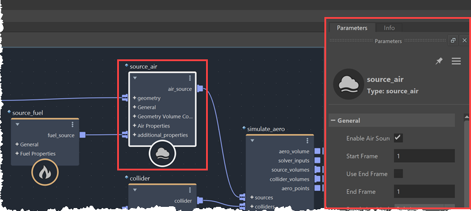
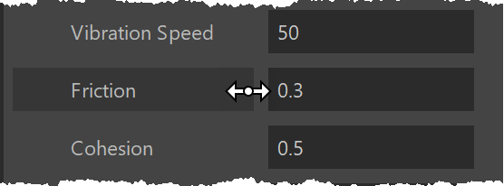

使用“参数编辑器”(Parameter Editor)在选定节点的未连接端口上设置输入值。如果未显示“参数编辑器”(Parameter Editor)，请选择“编辑 > 参数编辑器”(Edit > Parameter Editor)。

第一次更改图表中未连接输入的值时，必须先重新编译整个图表，然后才能使用新值再次执行它。这可能需要一些时间，但发生这种情况时，将使用该级别的动态常量重新编译图表。这意味着相同级别的后续值更改不需要重新编译，从而大大加快更新速度。
对于数值，将指针移动到字段或标签上，直到它变为滑块，然后：

使用滑块时，单击并向右拖动可增加值，单击并向左拖动可减小值。滑块在屏幕边缘会折回，因此您可以连续拖动。
滑块的更改速率是指数级的：向右拖动大约 150 像素将使当前值加倍，拖动大约 300 像素，将使当前值变为原来的四倍。可以使用修改键调整速度：
当该值介于 –1 和 1 之间时，更改速率是线性的，而不是指数的。这样可以更轻松地微调值，并防止其被困在 0 处。
对于向量或矩阵，使用标签上的滑块可以按相同的量缩放所有分量。例外情况是当所有分量都为 0 时，在这种情况下，它会向每个分量添加相同的量。要修改单个分量，请使用单个数字框上的滑块。
要一次设置多个值，请执行以下操作：
作业端口是到主机场景的连接，Bifrost 会自动创建和管理这些连接。例如，如果添加 time 节点并使用它计算图表输出，Bifrost 会自动创建与场景时间的连接。
取消选择图表顶层的所有节点时，可以在“参数编辑器”(Parameter Editor)中看到这些作业端口。在主机应用程序中，它们也可以作为图表节点上的附加输入属性显示出来。
通常，您需要与这些作业端口交互，因为它们主要由 Bifrost 处理。但是，有一些例外情况，例如使用 Flow Wedging 时。